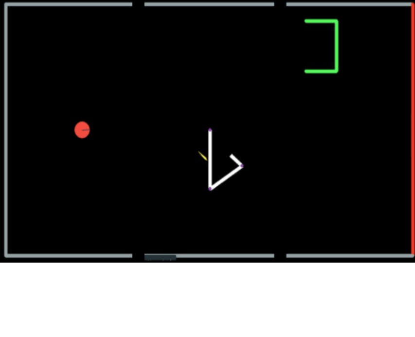
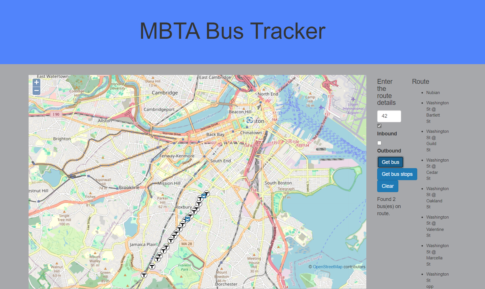

Universall Mobile Robot
Sept 2024
Designed and built a cost-effective mobile robot for research purposes. The main objective was to create a stable robot capable of carrying up to 100Kg while moving at 2m/s on a 10-degree incline. This was achieved using two powerful 350W motors and a sturdy frame that can be fabricated using high-density wood or aluminum.
I plan to use this robot base for future navigation and HRI-related projects.
Project Link
Project Link
WaltZ (Bipedal Walking Robot)
March 2024 - Current
This is a key project undertaken by the Khoury Robotics Club. The purpose of the project is to develop a cost-effective bipedal walking robot with 6 degrees of freedom (DoF), controlled by an RP2040 microcontroller integrated with a 9-axis IMU. This project is in development and will serve as an educational tool in undergraduate classes.
Project Link
Spatially Handling Arm Projectile Evader (SHAPER)
Nov 2023 - Dec 2023

A genetic algorithm was employed to train a simulated robot arm to evade flying objects. The entire project was written using only NumPy and Pygame, without external libraries. The algorithm uses a novel multi-step scoring function that gradually increases the complexity of the target function the robot arms must learn. This method significantly improved training time compared to traditional genetic algorithms.
Project Link
Paper
MBTA Bus Tracker
January 2024 - Current

This website serves as a comprehensive platform for tracking MBTA-operated buses. Users can conveniently access real-time information about bus routes and monitor the precise locations of the buses. This resource enhances efficiency and provides valuable insights for transit management.
Project Link
2D to 3D
January 2021 - March 2021

This final-year undergraduate project aimed to convert 2D images from standard cameras into 3D point clouds. Two approaches were explored: stereoscopy and machine learning.
Project Link
Project Link
Mars Helicopter
October 2020 - December 2020

Designed and 3D printed a small version of the Mars helicopter with counter-rotating propellers. The design has some stability issues, as it is highly sensitive to the center of gravity (CG) of the craft.
Frame Rate Doubling
January 2020 - March 2020
This project, developed during a hackathon, aimed to double the frame rate of a video using generative adversarial networks (GANs) and interpolation. It explored the benefits of storing and transmitting videos at half the frame rate while relying on the receiver to render the missing frames.
Project Linkthe frame rate of a video using generative adversarial networks (GANs) and interpolation. It explored the benefits of storing and transmitting videos at half the frame rate while relying on the receiver to render the missing frames.
Project Link
Project Link
Algorithms for Information Retrieval
January 2020 - March 2020
This project involved developing a trie-based inverted index algorithm for searching large text-based data sets. The project also compared the accuracy and efficiency of this model to that of Elastic Search.
Project Link
KTG Simulation
July 2022 - Present
A simple model to simulate particles in a box, visually depicting the Kinetic Theory of Gases. The project explores different algorithms used to detect and resolve collisions within the simulation.
Project Link
Training Neural Networks using Genetic Algorithm
September 2019
This project involved implementing a generic approach to training neural networks using genetic algorithms combined with simulated annealing, primarily for classification problems.
Project Link
Paper
Database as a Service (DBaaS)
January 2020 - March 2020
An implementation of a Database as a Service (DBaaS) model, with auto-scaling and fault-tolerant capabilities, using MongoDB.
Project Link